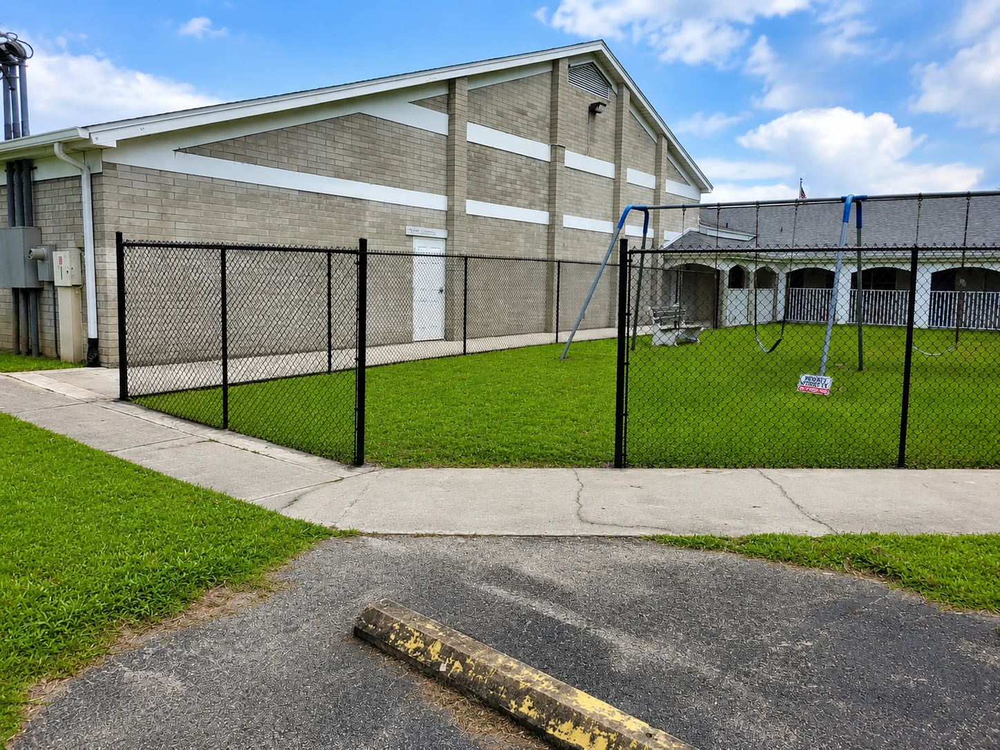

Vinyl, Aluminum Or Chain Link: How To Pick
Every material trades something away. Here is what each one gives up, said plainly.

There is no best fence material. There is the one that fits what the property needs, and every one of them gives something up.
Vinyl buys privacy and gives up wind
A solid vinyl panel is a wall. That is the point, and it is also why wind performance varies so much by profile. Ask for the spec sheet for your exposure before you commit to a run along an open lot.
Aluminum buys looks and gives up privacy
Powder coated aluminum is the cleanest looking system we stock and the one that passes pool code without argument. It is an open picket. You will see through it, by design.
Chain link buys budget and gives up appearance
Nothing covers a large perimeter for less. Parts sell individually, so a repair is a part and not a panel. It reads industrial, which is right for a yard and wrong for a front elevation.
The short version
- Backyard privacy, low upkeep: vinyl
- Pool enclosure, HOA front: aluminum
- Security, sports, industrial: chain link
- Modern privacy, coastal salt air: metal or EC Fence